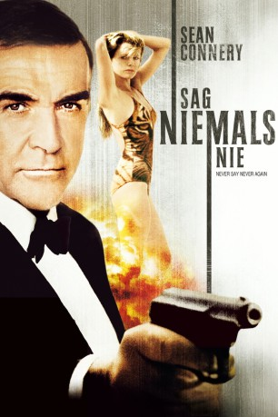

#268 James Bond 14 - Sean Connery - Sag niemals nie
Alternativ: Never Say Never Again
 
 IMDB-Wertung: 6.2 / 10
IMDB-Wertung: 6.2 / 10  Metascore: 68
Metascore: 68 
Von einem Nato-Stützpunkt in England werden auf spektakuläre Weise zwei Atomraketen gestohlen. Als die Nato damit erpresst werden soll, schicken die Briten ihren Topagenten James Bond, um die nukleare Bedrohung abzuwenden, und die Gangster dingfest zu machen.
Jahr: 1983
Dauer: 134 Minuten
FSK: 12
Land: England Studio: Neue Constantin FilmTonspuren:
Untertitel: Deutsch, Englisch,
Auflösung: 1080p (1920×816) Größe: 17817 MB
Genre: Action, Abenteuer, Thriller
Regisseur: Irvin Kershner
Drehbuch: Kevin McClory, Jack Whittingham, Ian Fleming, Lorenzo Semple Jr., Dick Clement
Soundtrack: Michel Legrand
Darsteller:
Datei: X:\7+mehr(A-Z)\007 James Bond\James Bond 14 - Sean Connery - Sag niemals nie (1983, FSK12, 1920x816).mkv seit 15.02.2015
Festplatte: HD Collection-7+mehr(A-Z)+Person
 Es gibt insgesamt 28 Filme in der Gruppe '7+mehr(A-Z)\007 James Bond'
Es gibt insgesamt 28 Filme in der Gruppe '7+mehr(A-Z)\007 James Bond'